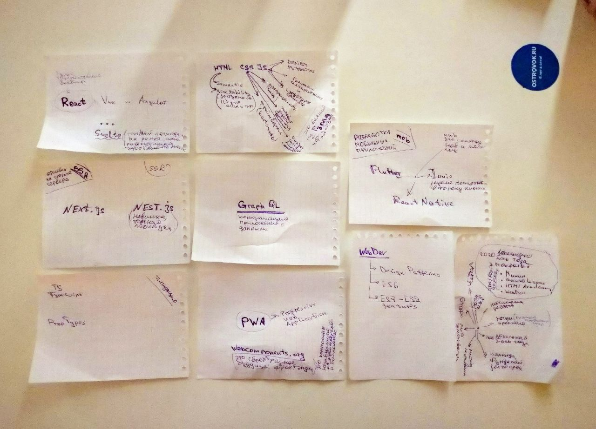

#block today-learning-list


------------------ СВОДНОЕ ПРИЛОЖЕНИЕ ------------------
Как сделать типовые задачи в web приложении на React JS: (это для резюме условно, для наработки практики, выложить на гитхаб пэйджес) - https://habr.com/ru/post/346584/ (ознакомительная статья) - https://avrylkov.github.io/react/ (пример для "потыканья") - https://github.com/avrylkov/react (исходники "примера для потыканья") ---------- # МОЙ_СТАФ (приложения, кейсы примеры, которые реализую, для портфолио, для себя, для других, оупэнзсоурзс) ----------
----------------- # ПЛАНКА ПРОБИТИЯ -----------------
---------------- # ПЛАНКА ПРОБИТИЯ (i-never-did-lest - цели, планка, порог пробития, стена, выход на новый уровень) ----------------
---------что выведет консоль? $ https://www.web-telegram.ru/#/im?p=@js_test